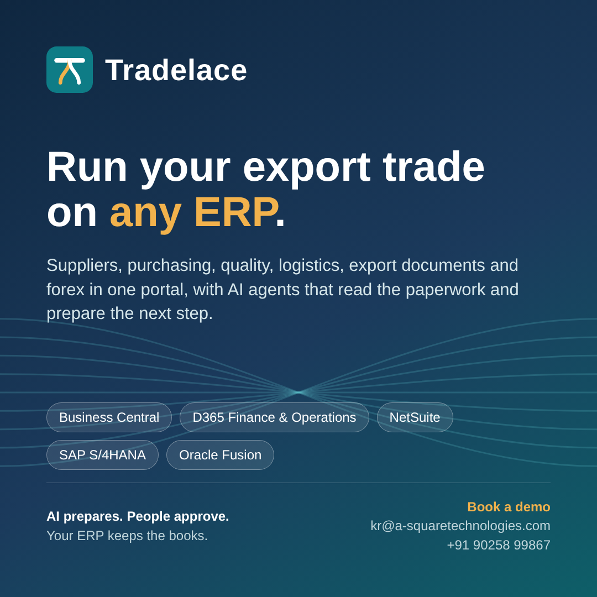

Suppliers and sourcing
Onboarding by link, compliance and expiry tracking, risk score and scorecard. Sealed-bid RFQs with AI bid evaluation, award, contracts and supplier advances.

Tradelace
Export traders juggle suppliers, trucks, containers, lab results, letters of credit and currency risk across email, WhatsApp and spreadsheets, while the ERP only sees the end result. Tradelace puts that work in one place, lets AI agents read the paperwork and prepare the next step, and writes clean drafts into the ERP you already run.
Book a demo Feature note (PDF)Onboarding by link, compliance and expiry tracking, risk score and scorecard. Sealed-bid RFQs with AI bid evaluation, award, contracts and supplier advances.
Dispatch notices, gate and weighbridge, test certificates read automatically, spec checks, quality premiums and penalties, lab release or hold, full lot traceability.
Transport orders, rates from WhatsApp replies, trip tracking and delay alerts, container booking and bill of lading checks. Offline-first Android app for the gate and yard.
Invoices matched to orders and receipts, received-not-invoiced, statement reconciliation, and a payment run proposal that sets off advances.
Buyer credit, export documents checked against the letter of credit, remittances and collections, forex exposure, hedges and daily advice.
Read quotations, invoices, certificates, bills of lading, bank advices and replies; check them against the ERP; prepare drafts with their reasons.
Microsoft Dynamics 365 Business Central, Dynamics 365 Finance & Operations, Oracle NetSuite, SAP S/4HANA and Oracle Fusion Cloud ERP.
Each ERP gets a small, upgrade-safe extension in the vendor's own model. Business Central is available today; Finance & Operations and NetSuite connectors are built and in validation; SAP S/4HANA and Oracle Fusion are on the roadmap.
Nothing posts to your ERP without a person's approval, and every approval is recorded.
Keep your ERP, your reports and your BI; Tradelace adds the trade workflow around them.
Every connector checks the ERP's answers, retries safely and pauses calls when an ERP is struggling.
Tax, customs and export-incentive rules plug in per country, starting with India: GST, e-way bills, shipping bills and realisation.
Ask us for a demo and a fit check against your ERP version.
Email: kr@a-squaretechnologies.com
Phone: +91 90258 99867